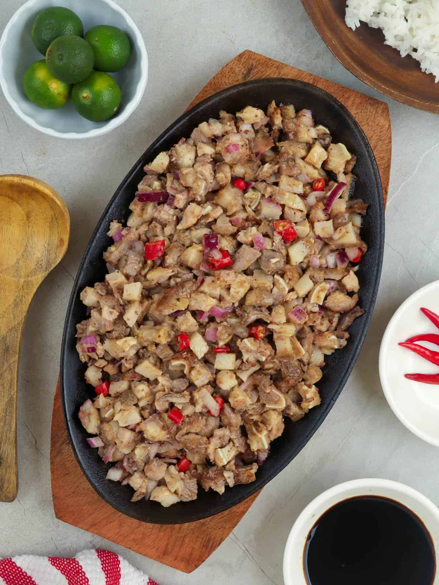

Lasagna Recipe

Lasagna
Lasagna is a wide, flat sheet of pasta.
Ingredients
- 1 pound sweet Italian sausage
- 3/4 pound lean ground beef
- 1/2 cup minced onion
- 2 gloves garlic, crushed
- 1 can crushed tomatoes
- 2 cans tomato paste
- 2 cans canned tomato sauce
- 1/2 cup water
- 2 tablespoons white sugar
- 1 1/2 teaspoons dried basil leaves
- 1/2 teaspoon fennel seeds
- 1 teaspoon Italian seasoning
- 1 1/2 teaspoons salt, divided, or to taste
- 1/4 teaspoon ground black pepper
- 4 tablespoons chopped flesh parsley
- 12 lasagna noodles
- 16 ounces ricotta cheese
- 1 egg
- 3/4 pound mozzarella cheese, sliced
- 3/4 cup grated Parmesan cheese
Steps
- In a Dutch oven, cook sausage, ground beef, onion, and garlic over medium heat until well browned.
- Bring a large pot of lightly salted water to a boil.
- Preheat oven to 375 degrees F